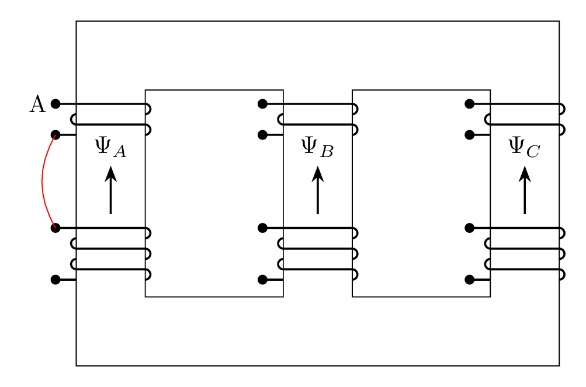

\documentclass[tikz,border=3mm]{standalone}
\usetikzlibrary{quotes,arrows.meta}
\begin{document}
\tikzset{
terminal_a/.pic = {%
\coordinate (-in) at (-3mm,0);
\coordinate (-out) at (-3mm,-4.5mm);
\path[fill] (-in) circle (2pt);
\draw[thick] (-in)--(0,0)--++(0:1cm) arc[start angle=90, delta angle=-180, radius=.75mm];
\draw[thick] (0,-1.5mm) arc[start angle=90, delta angle=180, radius=.75mm]--++(0:1cm) arc[start angle=90, delta angle=-180, radius=.75mm];
\fill (-out) circle (2pt);
\draw[thick] (-out) -- ++(0:3mm);
},
terminal_b/.pic = {%
\coordinate (-in) at (-3mm,0);
\coordinate (-out) at (-3mm,-7.5mm);
\path[fill] (-in) circle (2pt);
\draw[thick] (-in)--(0,0)--++(0:1cm) arc[start angle=90, delta angle=-180, radius=.75mm];
\draw[thick] (0,-1.5mm) arc[start angle=90, delta angle=180, radius=.75mm]--++(0:1cm) arc[start angle=90, delta angle=-180, radius=.75mm];
\draw[thick] (0,-4.5mm) arc[start angle=90, delta angle=180, radius=.75mm]--++(0:1cm) arc[start angle=90, delta angle=-180, radius=.75mm];
\fill (-out) circle (2pt);
\draw[thick] (-out) -- ++(0:3mm);
},
field/.pic = {
\draw[thick,-Stealth] (0,0) -- (90:7mm) node[above] {\tikzpictext};
}
}
\begin{tikzpicture}
\draw (0,0) rectangle (7,5);
\draw (1,1) rectangle (3,4);
\draw (4,1) rectangle (6,4);
\foreach \i/\j in {0/A,3/B,6/C}{
\pic (upper-\j) at (\i,3.8) {terminal_a};
\pic (lower-\j) at (\i,2) {terminal_b};
\pic["$\Psi_\jquot;] at ([xshift=5mm]\i,2.2) {field};
}
\node[left] at (upper-A-in) {A};
\draw[red] (upper-A-out) to [bend right] (lower-A-in);
\end{tikzpicture}
\end{document}Created by David Li